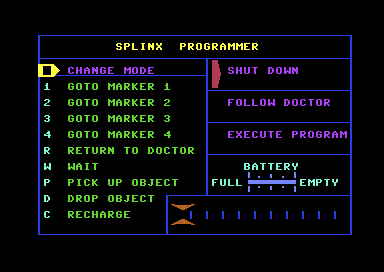

<meta charset="utf-8">
<meta name="viewport" content="width=device-width, initial-scale=1">
<title>Doctor Who and the Mines of Terror</title>
<link rel="preconnect" href="https://fonts.googleapis.com">
<link rel="stylesheet" href="https://fonts.googleapis.com/css2?family=Lato:wght@400;700;900&family=IBM+Plex+Mono:wght@400;500&display=swap">
<link rel="stylesheet" href="reference/dw-page.css">
<!-- tabs -->
<header class="hero">
  <p class="eyebrow">Commodore 64 · 1986 · Micro Power</p>
  <h1>Doctor Who and the Mines of Terror</h1>
  <p class="sub">What the Doctor must do, what he carries, how Splinx is programmed, what kills him, and how the game marks his escape.</p>
</header>
<main class="wrap">
<section id="quest">
  <p class="fig">The quest</p>
  <h2 class="t">Stop the machine, take what matters, get out alive</h2>
  <p class="lede">The game has one goal it insists on: leave the mine alive, in the TARDIS or in an escape pod (<code>game_event_handler</code>, <code>$9102</code>). Everything else is optional. Each optional goal doubles the escape bonus, which decides how well the Time Lords think the Doctor did (<a href="#end">scoring</a>), and each links to how it is done on the Solution tab:</p>
  <table class="t">
    <tr><th>Goal</th><th>Needed</th><th>How</th><th>Code</th></tr>
    <tr><td>Leave the mine</td><td><b>Must</b></td><td>By <a href="solution.html#step-tardis">the TARDIS</a>, with empty hands and F5 on the second TARDIS, halfway up on the far right <a href="levels.html?go=TARDIS%3A%20the%20way%20home%20(empty%20hands)#mine">map</a>, or by <a href="solution.html#step-pod">an escape pod</a>, launched with the ACTIVATOR at the top of the mine. Losing the last regeneration ends the game instead.</td><td><code>$9102</code></td></tr>
    <tr><td><a href="solution.html#step-machine">Halt the heatonite machine</a></td><td>Optional</td><td>The machine's CIRCUITs spell START. Swap the A and the R in slots 3 and 4, halfway up on the left, for the O and the P found elsewhere so they spell STOP, then carry out one of the CIRCUITs taken out <a href="levels.html?go=MACHINERY%3A%20circuit%20slot%201#mine">map</a>.</td><td><code>$B9B6</code></td></tr>
    <tr><td><a href="solution.html#step-crystal">Carry out the CRYSTAL</a></td><td>Optional</td><td>It lies on the left, two thirds of the way up the mine <a href="levels.html?go=CRYSTAL#mine">map</a>. A creature comes to take it back.</td><td><code>$916F</code></td></tr>
    <tr><td><a href="solution.html#step-capsule">Carry out the CAPSULE</a></td><td>Optional</td><td>The capsule holds the TIRU plans the Master stole; the end screen names it THE TIRU PLANS. It lies near the top right corner of the mine <a href="levels.html?go=CAPSULE#mine">map</a>.</td><td><code>$9177</code></td></tr>
    <tr><td><a href="solution.html#step-splinx">Bring Splinx home</a></td><td>Optional</td><td>The Doctor carries Splinx out like any other item: the game checks that Splinx is in his hands or one of his pockets when he leaves (<code>item_bonus_check</code>). Following him to the exit is not enough.</td><td><code>$917F</code></td></tr>
    <tr><td><a href="solution.html#step-tardis">Leave in the TARDIS</a></td><td>Optional</td><td>The TARDIS rather than an escape pod.</td><td><code>$918D</code></td></tr>
  </table>
  <p style="margin-top:20px">Rock, clamped ladders, bad air, a security gate, and a code lock stand in the way, and the tools that clear them lie around the mine.</p>
  <p>The <a href="levels.html">Maps</a> tab shows where each of them is, and the <a href="solution.html">Solution</a> tab takes the steps in order.</p>
</section>
<section id="pockets">
  <p class="fig">Pockets and items</p>
  <h2 class="t">Everything the Doctor can pick up</h2>
  <p class="lede">Twenty-four objects lie in the mine when a game starts, and the Doctor can carry any of them, Splinx too. Each pin in the Map column opens the Maps tab on that object, one pin for each copy.</p>
  <table class="t items">
    <tr><th></th><th>Object</th><th>What it is for</th><th>Map</th></tr>
    <tr><td><canvas data-o="2"></canvas></td><td>SPLINX</td><td>The Doctor's robot cat. It follows him, or runs a program of up to ten commands to fetch things he cannot reach (<a href="#splinx">below</a>). Carried out at the end, it doubles the bonus (<code>$917F</code>).</td><td class="map"><a href="levels.html?go=2#mine" title="Show SPLINX on the map" aria-label="Show SPLINX on the map"></a></td></tr>
    <tr><td><canvas data-o="52"></canvas></td><td>PICK AXE</td><td>Digs through rock. Three blows at any of three dig sites wear the rock away and open a passage (<code>$BC1C</code>). Three Rijan miners pass it between them, so the Doctor has to take it while it lies free (<a href="solution.html#madrag">Solution</a>).</td><td class="map"><a href="levels.html?go=34#mine" title="Show the PICK AXE on the map" aria-label="Show the PICK AXE on the map"></a></td></tr>
    <tr><td><canvas data-o="56"></canvas></td><td>SPANNER</td><td>Undoes the eight bolts that clamp ladders high in the mine, so he can climb them. Each bolt redraws its block with the clamp open (block <code>$E0</code> becomes <code>$E1</code>, <code>use_spanner</code>, <code>$BBBC</code>). Bolt 6 works only from below.</td><td class="map"><a href="levels.html?go=38#mine" title="Show the SPANNER on the map" aria-label="Show the SPANNER on the map"></a></td></tr>
    <tr><td><canvas data-o="58"></canvas></td><td>AIR MASK</td><td>Held in his hands, it fills his air again, so he can cross the bad-air blocks high in the mine without suffocating (<code>$CAB1</code>).</td><td class="map"><a href="levels.html?go=3a#mine" title="Show the AIR MASK on the map" aria-label="Show the AIR MASK on the map"></a></td></tr>
    <tr><td><canvas data-o="55"></canvas></td><td>PASS CARD</td><td>Held in his hands, it opens the security gate (<code>$BB15</code>).</td><td class="map"><a href="levels.html?go=37#mine" title="Show the PASS CARD on the map" aria-label="Show the PASS CARD on the map"></a></td></tr>
    <tr><td><canvas data-o="63"></canvas></td><td>ACTIVATOR</td><td>Used at one of three points at the top of the mine, it launches the escape pod, one of the two ways out (<code>$BCDA</code>, <code>use_activator</code>, <code>$BCE0</code>).</td><td class="map"><a href="levels.html?go=3f#mine" title="Show the ACTIVATOR on the map" aria-label="Show the ACTIVATOR on the map"></a></td></tr>
    <tr><td><canvas data-o="61"></canvas></td><td>EXPLOSIVES</td><td>Set with F5, they go off after a fuse, and the blast destroys anything close, the Doctor too. Blown at one point low on the right, they start a level rising that counts as halting the machine but drowns him if it reaches him (<code>$C202</code>). Blown at another, they open <a href="#prisoner">a walled-up doorway</a> (<code>$C22E</code>).</td><td class="map"><a href="levels.html?go=3d#mine" title="Show the EXPLOSIVES on the map" aria-label="Show the EXPLOSIVES on the map"></a></td></tr>
    <tr><td><canvas data-o="60"></canvas></td><td>DETONATOR</td><td>Three of them. Set with F5, each goes off after a fuse, and the blast destroys anything within 32 pixels, a controller or the Doctor (<code>$C1CB</code>). A blast in the right place opens <a href="#prisoner">a walled-up doorway</a> (<code>$C22E</code>).</td><td class="map"><a href="levels.html?go=3c#mine" title="Show DETONATOR 1 on the map" aria-label="Show DETONATOR 1 on the map"><span>1</span></a><a href="levels.html?go=48#mine" title="Show DETONATOR 2 on the map" aria-label="Show DETONATOR 2 on the map"><span>2</span></a><a href="levels.html?go=4c#mine" title="Show DETONATOR 3 on the map" aria-label="Show DETONATOR 3 on the map"><span>3</span></a></td></tr>
    <tr><td><canvas data-o="64"></canvas></td><td>CIRCUIT</td><td>Five sit in the heatonite machine at the start, each marked with a letter, and in order they spell START. Taking out the A and the R in slots 3 and 4 is the first half of stopping the machine. With the machine stopped, the halt counts at the end only if the Doctor carries out the A, the R, or one of the two Ts (<code>$41</code>, <code>$42</code>, <code>$43</code>, <code>$4A</code>; <code>$9190</code>).</td><td class="map"><a href="levels.html?go=40#mine" title="Show CIRCUIT 1 on the map" aria-label="Show CIRCUIT 1 on the map"><span>1</span></a><a href="levels.html?go=41#mine" title="Show CIRCUIT 2 on the map" aria-label="Show CIRCUIT 2 on the map"><span>2</span></a><a href="levels.html?go=42#mine" title="Show CIRCUIT 3 on the map" aria-label="Show CIRCUIT 3 on the map"><span>3</span></a><a href="levels.html?go=43#mine" title="Show CIRCUIT 4 on the map" aria-label="Show CIRCUIT 4 on the map"><span>4</span></a><a href="levels.html?go=4a#mine" title="Show CIRCUIT 5 on the map" aria-label="Show CIRCUIT 5 on the map"><span>5</span></a></td></tr>
    <tr><td><canvas data-o="68"></canvas></td><td>CIRCUIT</td><td>Two more lie elsewhere in the mine, marked O and P. Put into slots 3 and 4, they make the word STOP, and the machine stops (<code>machinery_update</code>, <code>$B9B6</code>; letters wanted in each slot at <code>$B989</code>; <a href="solution.html#step-machine">Solution</a>). You can tell it has stopped: three red lumps riding the pipes and a crate on its belt stand still (<code>$BA3C</code>).<sup class="fn"><a href="about.html#src-11" title="A walkthrough on the Stardot forum, probably of the BBC Micro version">11</a></sup> Spelling START again starts it again (<code>$BA06</code>).</td><td class="map"><a href="levels.html?go=44#mine" title="Show CIRCUIT 1 on the map" aria-label="Show CIRCUIT 1 on the map"><span>1</span></a><a href="levels.html?go=45#mine" title="Show CIRCUIT 2 on the map" aria-label="Show CIRCUIT 2 on the map"><span>2</span></a></td></tr>
    <tr><td><canvas data-o="54"></canvas></td><td>CRYSTAL</td><td>Carried out at the end, it doubles the bonus (<code>$916F</code>). The Master comes to take it back, even from a pocket (<code>$B48A</code>).</td><td class="map"><a href="levels.html?go=36#mine" title="Show the CRYSTAL on the map" aria-label="Show the CRYSTAL on the map"></a></td></tr>
    <tr><td><canvas data-o="62"></canvas></td><td>CAPSULE</td><td>The TIRU plans the Master stole. Carried out at the end, it doubles the bonus (<code>$9177</code>).</td><td class="map"><a href="levels.html?go=3e#mine" title="Show the CAPSULE on the map" aria-label="Show the CAPSULE on the map"></a></td></tr>
    <tr><td><canvas data-o="53"></canvas></td><td>MAT</td><td>Left lying in a controller's path, it stops the controller when the two are level and within ten pixels (<code>$CDD6</code>).</td><td class="map"><a href="levels.html?go=35#mine" title="Show the MAT on the map" aria-label="Show the MAT on the map"></a></td></tr>
    <tr><td><canvas data-o="57"></canvas></td><td>PLATFORM</td><td>Left lying in the mine, it works like an invisible ladder. Once he jumps up beside it, he can move up and down anywhere up to 80 pixels above it, until he comes back down onto it or steps more than 20 pixels away (<code>$C975</code>, <code>doctor_ride_platform</code>, <code>$CCE2</code>). He cannot pick it up while he is using it.</td><td class="map"><a href="levels.html?go=39#mine" title="Show the PLATFORM on the map" aria-label="Show the PLATFORM on the map"></a></td></tr>
    <tr><td><canvas data-o="70"></canvas></td><td>EGG</td><td>The madrag's two eggs. Going near one that lies free hatches a baby madrag, which kills (<code>$B861</code>). The madrag carries a moved egg back to its nest, and takes one from Splinx if he holds it (<code>$B752</code>), which is how the Doctor gets past her to the AIR MASK (<a href="solution.html#madrag">Solution</a>).</td><td class="map"><a href="levels.html?go=46#mine" title="Show EGG 1 on the map" aria-label="Show EGG 1 on the map"><span>1</span></a><a href="levels.html?go=47#mine" title="Show EGG 2 on the map" aria-label="Show EGG 2 on the map"><span>2</span></a></td></tr>
    <tr><td><canvas data-o="59"></canvas></td><td>BOX</td><td>What it is for is not known. No code refers to the BOX on its own: only the routines shared by every item pick it up, carry it, and draw it.</td><td class="map"><a href="levels.html?go=3b#mine" title="Show the BOX on the map" aria-label="Show the BOX on the map"></a></td></tr>
    <tr><td><canvas data-o="73"></canvas></td><td>CHEMICALS</td><td>Dropped in the pool, within 80 pixels of its middle, they turn the pool purple and stop two controllers for good. The two turn red, stand still, and can no longer kill (<code>machinery_update</code>, <code>$BA8D</code>). Losing a life does not restart them (<code>$93C7</code>).</td><td class="map"><a href="levels.html?go=49#mine" title="Show the CHEMICALS on the map" aria-label="Show the CHEMICALS on the map"></a></td></tr>
  </table>
  <p class="cap">Each object drawn from its starting frame (<code>$1D30</code>) in its own colour (<code>$1850</code>), with its name from the game's own table: ten characters at <code>$1770</code> plus the offset in <code>$1720</code>, in the game's private alphabet.</p>
  <p>The Doctor carries one item in his hands and up to four more in his pockets, and the status bar shows all five. F5 picks up any object within reach, from <code>$30</code> to <code>$4F</code>, or Splinx (<code>pickup_nearby</code>, <code>$A929</code>). Using an object that works only in certain places compares his position with that object's table of points (<code>use_item_update</code>, <code>$BACC</code>). The keys that move things between hands and pockets are on the <a href="controls.html">Controls</a> tab.</p>
</section>
<section id="splinx">
  <p class="fig">Splinx</p>
  <h2 class="t">A robot cat with a ten-step program</h2>
  <p class="lede">Splinx can follow the Doctor, stay put, or run a program of up to ten commands, written in a language the story calls CYBAL.<sup class="fn"><a href="about.html#src-16" title="TARDIS Data Core, Doctor Who and the Mines of Terror (video game)">16</a></sup> Press S to open its programming screen.</p>
  <figure class="dw-shot" style="margin-top:0"><figcaption>The Splinx Programmer. The game shows it from a screen of its own at <code>$0C00</code>, with its own character set.</figcaption></figure>
  <table class="t" style="margin-top:20px">
    <tr><th>Command</th><th>What Splinx does</th></tr>
    <tr><td>1-4 GOTO MARKER</td><td>walks to one of the four markers the Doctor has dropped</td></tr>
    <tr><td>R RETURN TO DOCTOR</td><td>walks back to him</td></tr>
    <tr><td>W WAIT</td><td>stands still</td></tr>
    <tr><td>P PICK UP OBJECT</td><td>takes the nearest free item, if one is within 16 by 8 pixels</td></tr>
    <tr><td>D DROP OBJECT</td><td>puts it down</td></tr>
    <tr><td>C RECHARGE</td><td>on a charging point, gains one unit of battery every 8 frames</td></tr>
  </table>
  <p>Splinx fetches items the Doctor cannot reach or carry. To send it somewhere, the Doctor drops one of his four markers there with F3. The markers are objects <code>$30</code>-<code>$33</code>, kept in the marker box of the status bar.</p>
  <p>On the programming screen the joystick moves between the commands and along the ten steps of the program, and fire writes the command into the step. The three choices on the right set Splinx's mode: shut down, follow the Doctor, or execute the program (<code>splinx_update</code>, <code>$B1A0</code>).</p>
  <p>The battery starts full at 24 units. It loses one every 1,024 frames, about 20 seconds, while Splinx follows the Doctor or runs a program, so a full charge lasts about eight minutes of work. Shut down, Splinx uses nothing. The gauge on the programming screen is a sprite the game redraws from the battery level (<code>$B07D</code>).</p>
</section>
<section id="lifts">
  <p class="fig">The lift and the car</p>
  <h2 class="t">A lift with eight stops, and a car that runs sideways</h2>
  <p class="lede">Ladders are not the only way around the mine. A lift carries the Doctor up and down, and a car carries him sideways along two stretches of track.</p>
  <p>The lift (<code>lift_update</code>, <code>$A13C</code>) travels between eight stops, from the top one to the bottom one and back, waiting at every stop before it moves on (<code>$A12C</code>). It takes a passenger only at the end of a wait: just before it sets off, it checks whether the Doctor is standing on its floor within 18 pixels of its middle (<code>lift_check_board</code>, <code>$A252</code>). A player who steps on as the lift leaves is left behind. Close to the lift, the pocket keys do nothing (<code>$A1F1</code>), so the Doctor cannot drop or use anything beside it.</p>
  <p>The car (<code>$A2B9</code>) works the same way sideways. It shuttles from one end of its track to the other, waits longer than the lift at each end, and checks for the Doctor just before it leaves (<code>$A2B0</code>).</p>
</section>
<section id="prisoner">
  <p class="fig">The prisoner</p>
  <h2 class="t">One controller takes the Doctor prisoner instead of killing him</h2>
  <p class="lede">Every other controller kills the Doctor at a touch. The one that patrols high on the right of the mine marches him through a doorway the first time it catches him, and walls him in.</p>
  <p>Controller <code>$22</code> starts at x <code>$0C40</code>, y <code>$0588</code>, just right of the doorway. When it reaches the Doctor while he stands on a floor (his height is 8 more than a multiple of 16), it does not shock him. It sets a flag instead (<code>controller_touch</code>, <code>$CE28</code>), and while the flag is set the game takes the joystick away: the Doctor cannot fire or use his pockets, and he walks by himself to a point just inside the doorway (<code>$C9AB</code>). Once he is within 16 pixels of that point, the controller walls up the doorway behind him, redrawing its block with a column of rock (block <code>$04</code> becomes <code>$F1</code>, <code>controller_wait</code>, <code>$CF44</code>), and goes back to its patrol.</p>
  <p>That wall is the one a blast opens (<code>$C22E</code>). A DETONATOR or the EXPLOSIVES going off within 32 pixels of the doorway clears it, and the same blast destroys any controller in reach (<code>blast_damage</code>, <code>$C1CB</code>). Until the wall is blown, no controller comes after the Doctor (<code>$CE8A</code>). He is taken prisoner only once: the flag survives a regeneration (<code>$937F</code>), and every later touch from a controller is fatal.</p>
</section>
<section id="dangers">
  <p class="fig">Dangers</p>
  <h2 class="t">Five regenerations, and the ways to lose them</h2>
  <p class="lede">When the Doctor dies, he fades away pixel by pixel, the cause scrolls across the status bar, and he comes back at the last restart point he passed. Choose a cause to decode its message from the game's tables.</p>
  <p>The Doctor starts with five lives. They are drawn as five stars in the status bar's item field, which is why the stars disappear when he picks something up (<code>$94AC</code>). After the last one, the game is over.</p>
  <div class="plate">
    <div class="row"><select class="b" id="cause" aria-label="Cause of death"></select></div>
    <div class="out" id="msg"></div>
    <p class="cap">Decoded from the table of causes at <code>$90EF</code> and the message pointers at <code>$95CB</code>/<code>$9626</code>. A death stores twice the cause's number in <code>$E8</code>.</p>
  </div>
  <table class="t" style="margin-top:20px">
    <tr><th>Cause</th><th>What happens</th><th>Where</th></tr>
    <tr><td>An explosion</td><td>the Doctor is too close when a charge goes off</td><td><code>blast_damage</code> <code>$C1CB</code></td></tr>
    <tr><td>A controller</td><td>he touches one of the patrolling controllers; the first touch from controller <code>$22</code> <a href="#prisoner">takes him prisoner</a> instead</td><td><code>controller_touch</code> <code>$CE08</code></td></tr>
    <tr><td>A fall</td><td>he drops 96 pixels or more</td><td><code>fall_check</code> <code>$CD62</code></td></tr>
    <tr><td>A stalagmite</td><td>he touches one of the sixteen stalagmite blocks</td><td><code>doctor_tile_checks</code> <code>$CA58</code></td></tr>
    <tr><td>Suffocating</td><td>his air runs out. Walking into one of the four bad-air blocks high in the mine starts a countdown of 50 (<code>$F1</code>). The countdown runs while he is high in the mine (<code>$1C60</code> of 2 or more), except in open cavern, and holding the AIR MASK fills his air again every time (<code>$CAB1</code>). A fifth bad-air block lies lower down, where the test is never made.</td><td><code>doctor_tile_checks</code> <code>$CA58</code>, <code>$CA90</code></td></tr>
    <tr><td>A madrag bite</td><td>the madrag reaches him</td><td><code>$B956</code></td></tr>
    <tr><td>A baby madrag</td><td>he goes near an egg and it hatches</td><td><code>$B902</code></td></tr>
    <tr><td>The rising level</td><td>after the explosives are set off in one place, a level rises through the mine</td><td><code>fuse_update</code> <code>$C09A</code></td></tr>
    <tr><td>Forced regeneration</td><td>the player presses R</td><td><code>$9051</code></td></tr>
  </table>
  <p>The fade is the TARDIS's own effect turned on the Doctor (<code>doctor_draw</code>, <code>$CB6B</code>). For the last 127 frames of the death, every fourth frame, the game copies his two frames afresh and clears more of their pixel pairs, six more each time, in the shuffled order the <a href="graphics.html#tardis">TARDIS landing</a> uses (<code>dissolve_sprite</code>, <code>$FEA9</code>). The <a href="graphics.html#doctor">Graphics</a> tab plays it.</p>
</section>
<section id="cast">
  <p class="fig">Creatures</p>
  <h2 class="t">Who else is in the mine</h2>
  <p class="lede">The Doctor shares the mine with Splinx, the Rijans who work it, the Master's controllers, a madrag and her eggs, and the Master himself. Each is drawn here from its own frames, as the game animates it.</p>
  <table class="t items npcs">
    <tr><th></th><th>Who</th><th>How many</th><th>What they do</th></tr>
    <tr><td><canvas data-o="2" data-fa="B197" data-n="4" title="Moving: a rolling ball"></canvas><canvas data-o="2" data-fa="B21A" title="Still: a sitting cat"></canvas></td><td>Splinx</td><td>1</td><td>The Doctor's robot cat, a rolling ball while it moves (<code>$B197</code>) and a sitting cat when it stops (<code>$B219</code>). It follows him or runs its program (<a href="#splinx">above</a>).</td></tr>
    <tr><td><canvas data-o="3" data-fa="C50D" data-n="2"></canvas></td><td>Rijan miners</td><td>3</td><td>Mine at the bottom left of the mine and pass the PICK AXE from one to the next (<code>trio_update</code>, <code>$C28E</code>).<sup class="fn"><a href="about.html#src-9" title="Euan (unorig), the page's steward, from playing the game">9</a></sup> They do the Doctor no harm.</td></tr>
    <tr><td><canvas data-o="6" data-fa="C4FF" data-n="2"></canvas></td><td>Patrolling Rijans</td><td>4</td><td>Walk their own routes (<code>patrol_think</code>, <code>$C45E</code>). They are Rijans too, drawn from the same frames as the miners,<sup class="fn"><a href="about.html#src-9" title="Euan (unorig), the page's steward, from playing the game">9</a></sup> and they do the Doctor no harm either.</td></tr>
    <tr><td><canvas data-o="16" data-fa="77B3" data-n="4"></canvas></td><td>Controllers</td><td>25</td><td>Follow fixed routes, stored as lists of waypoints at <code>$764A</code>, and kill the Doctor if he touches one (<code>controllers_update</code>, <code>$CD9A</code>). Controller <code>$22</code> <a href="#prisoner">takes him prisoner</a> the first time.</td></tr>
    <tr><td><canvas data-o="10" data-fa="B66D" data-fb="B675" data-n="4"></canvas></td><td>The madrag</td><td>1</td><td>Guards her two eggs. If an egg is moved, she fetches it and carries it back to its nest, and she takes one from Splinx too (<code>$B752</code>). She bites the Doctor if she reaches him, and she is fast: her code runs twice in every pass of the main loop, where the other creatures' code runs once (<code>madrag_update</code>, <code>$B680</code>).</td></tr>
    <tr><td><canvas data-o="13"></canvas></td><td>Baby madrag</td><td>up to 1</td><td>Hatches from an egg lying free when the Doctor comes near, and kills him (<code>$B861</code>).</td></tr>
    <tr><td><canvas data-o="12" data-fa="B46F" data-n="4"></canvas></td><td>The Master</td><td>1</td><td>Goes after the CRYSTAL, takes it from the Doctor's hands or even from his pockets, and carries it away (<code>$B48A</code>, <code>$B520</code>-<code>$B535</code>). Taking the crystal knocks the Doctor flat for a count of 121 (<code>$B544</code>, <code>$CB60</code>). The Master then walks to a door at x <code>$0DA8</code>, y <code>$0380</code>, which opens for him (<code>$B5AD</code>), and the crystal turns up high in the mine at x <code>$06C8</code>, y <code>$06A8</code>, free to be taken again (<code>$B587</code>). Players get it past him by having Splinx carry it,<sup class="fn"><a href="about.html#src-9" title="Euan (unorig), the page's steward, from playing the game">9</a></sup><sup class="fn"><a href="about.html#src-11" title="A walkthrough on the Stardot forum, probably of the BBC Micro version">11</a></sup> and it still doubles the bonus at the end while Splinx holds it (<code>$928C</code>). The code never names him: he is object <code>$0C</code>, a figure in blue drawn at twice the usual height (<code>$18AC</code>). Players know him as the Master.<sup class="fn"><a href="about.html#src-9" title="Euan (unorig), the page's steward, from playing the game">9</a></sup></td></tr>
  </table>
</section>
<section id="end">
  <p class="fig">Escape</p>
  <h2 class="t">How the Time Lords mark you</h2>
  <p class="lede">The game ends when the Doctor leaves in the TARDIS or in an escape pod. What he brings with him doubles his bonus, and his score decides what the Time Lords think of him.</p>
  <table class="t">
    <tr><th>Step</th><th>Effect on the score</th><th>Where</th></tr>
    <tr><td>Time left</td><td>the time counter is added, unless the Doctor is low in the mine (height below <code>$0300</code>)</td><td><code>$911D</code>, <code>$91BC</code></td></tr>
    <tr><td>Bonus</td><td>starts at 1,024</td><td><code>$9163</code></td></tr>
    <tr><td>The CRYSTAL, the CAPSULE (THE TIRU PLANS on the end screen), Splinx</td><td>the bonus doubles for each one in his hands or a pocket</td><td><code>item_bonus_check</code> <code>$928C</code></td></tr>
    <tr><td>Leaving in the TARDIS</td><td>doubles again</td><td><code>$918D</code></td></tr>
    <tr><td>The heatonite machine halted</td><td>doubles again</td><td><code>$9190</code>-<code>$91B5</code></td></tr>
  </table>
  <table class="t" style="margin-top:20px">
    <tr><th>Final score</th><th>THE TIME LORDS ARE … WITH YOUR PERFORMANCE</th></tr>
    <tr><td>below 4,100</td><td>VERY DISPLEASED</td></tr>
    <tr><td>below 20,000</td><td>DISPLEASED</td></tr>
    <tr><td>below 40,000</td><td>PLEASED</td></tr>
    <tr><td>40,000 or more</td><td>VERY PLEASED</td></tr>
  </table>
  <p>Doing everything gives a bonus of 1,024 doubled five times, 32,768 (<code>game_event_handler</code>, <code>$9102</code>). The time counter adds up to 10,800 more, and in practice it nearly always adds all of it, because of a <a href="discoveries.html#countdown">slip in the frame counter</a>. The end screen says whether the Doctor HALTED THE PRODUCTION OF HEATONITE, from the same test as the last doubling (messages at <code>$95CB</code>).</p>
</section>
</main>
<script src="../../lib/c64.js"></script>
<script src="reference/dw-page.js"></script>
<script>
(async function () {
  let G; try { G = await DW.load(); } catch (e) { DW.fail(e); return; }
  const M = G.ram;

  // items: each drawn from its starting frame ($1D30), or a creature from its frame table (data-fa), in its own colour ($1850).
  // A creature whose table has data-n entries walks through them in turn, as the game steps them while it moves.
  // A creature made of two sprites names the upper one's table as well (data-fb): the madrag's head and body sit 21 pixels above her legs ($B861).
  // An object whose expansion flag ($18A0) is set is drawn at twice the height, as the game shows it ($8179).
  // Cropped to the rows and columns its frames use, at three times size.
  // Within each table every picture gets the same width, the widest any of them needs, with the sprite
  // at the same scale and centred, so the column lines up; each keeps its own height.
  const still = matchMedia('(prefers-reduced-motion: reduce)').matches, movers = [], specs = [];
  document.querySelectorAll('canvas[data-o]').forEach(cv => {
    const o = +cv.dataset.o, S = 3, tall = M[0x18A0 + o] ? 2 : 1, n = +cv.dataset.n || 1, cols = [2, M[0x1850 + o], 8];
    const at = (k, i) => k ? M[parseInt(k, 16) + i] : M[0x1D30 + o];
    const frames = [];
    for (let i = 0; i < n; i++) {
      const parts = [DW.image(M, at(cv.dataset.fa, i))];
      if (cv.dataset.fb) parts.unshift(DW.image(M, at(cv.dataset.fb, i)));
      const rows = [];
      for (const img of parts) for (let r = 0; r < 21; r++) for (let k = 0; k < tall; k++) rows.push(img.slice(r * 3, r * 3 + 3));
      frames.push(rows);
    }
    const px = (b, k) => (b[k >> 2] >> (6 - 2 * (k & 3))) & 3;
    let x0 = 12, x1 = -1, y0 = 99, y1 = -1;
    for (const rows of frames) rows.forEach((b, r) => { for (let k = 0; k < 12; k++) if (px(b, k)) { x0 = Math.min(x0, k); x1 = Math.max(x1, k); y0 = Math.min(y0, r); y1 = Math.max(y1, r); } });
    specs.push({ cv, frames, x0, x1, y0, y1, cols, n, S, px });
  });
  const bw = new Map();
  for (const s of specs) { const t = s.cv.closest('table'); bw.set(t, Math.max(bw.get(t) || 0, s.x1 - s.x0 + 3)); }
  specs.forEach(({ cv, frames, x0, x1, y0, y1, cols, n, S, px }) => {
    const w = bw.get(cv.closest('table')), h = y1 - y0 + 3;
    const ox = Math.floor((w - (x1 - x0 + 3)) / 2), oy = 0;
    const ctx = C64.canvas(cv, w * 2 * S, h * S);
    const draw = rows => {
      ctx.fillStyle = '#000'; ctx.fillRect(0, 0, cv.width, cv.height);
      rows.forEach((b, r) => { for (let k = 0; k < 12; k++) { const v = px(b, k);
        if (v) { ctx.fillStyle = C64.PAL[cols[v - 1]]; ctx.fillRect((k - x0 + 1 + ox) * 2 * S, (r - y0 + 1 + oy) * S, 2 * S, S); } } });
    };
    draw(frames[0]);
    if (n > 1 && !still) movers.push({ frames, draw });
  });
  let tick = 0;
  if (movers.length) setInterval(() => { tick++; for (const m of movers) m.draw(m.frames[tick % m.frames.length]); }, 160);

  // deaths
  const causes = [[6, 'an explosion'], [8, 'the rising level'], [10, 'a controller'], [12, 'a fall'], [14, 'a stalagmite'], [16, 'suffocating'], [18, 'forced regeneration'], [20, 'a madrag bite'], [22, 'a baby madrag']];
  const sel = document.getElementById('cause');
  for (const [e, t] of causes) sel.insertAdjacentHTML('beforeend', '<option value="' + e + '">' + t + ' ($E8 = ' + e + ')</option>');
  function cause() { const e = +sel.value, n = M[0x90EF + (e >> 1)];
    document.getElementById('msg').textContent = DW.message(M, M[0x90EF]) + DW.message(M, n) + '\n(message ' + n + ', entry ' + (e >> 1) + ' of the table at $90EF)'; }
  sel.onchange = cause; cause();
})();
</script>
